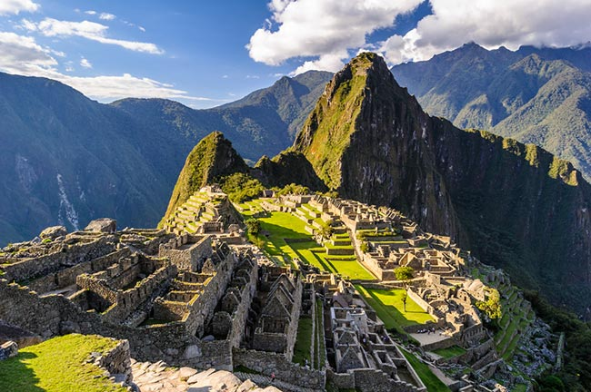

3.มาชูปิกชู (Machu Picchu)
มาชู ปิกชู (Machu Picchu) เป็นซากเมืองโบราณของอารยธรรมอินคา อดีตนั้นเมืองแห่งนี้เข้าถึงได้ยาก มีความเร้นลับและมหัศจรรย์ เพราะตั้งอยู่บนภูเขาสูง อันเป็นภูเขาส่วนหนึ่งในแนวเทือกเขาแอนดีสที่สูงใหญ่ที่สุดในโลก มาชู ปิกชู สร้างขึ้นในช่วงศตวรรษที่ 15 เคยเป็นดินแดนที่มีความเจริญรุ่งเรืองในยุคที่อาณาจักรอินคาอยู่ในยุคเฟื่องฟู แต่เมื่ออาณาจักรอินคาต้องล่มสลายด้วยการขยายอำนาจของสเปน มาชู ปิกชู ก็ถูกทอดทิ้ง กลายเป็นเมืองสาบสูญไปในช่วงศตวรรษที่ 16 และได้กลับกลายมาเป็นแหล่งท่องเที่ยวในฝันของนักเดินทางจากทั่วโลกอีกครั้ง หลังจากการค้นพบโดย Hiram Bingham ในปี ค.ศ. 1911
Create at 600 BC